Memory
Table of Contents
| 类型 | 缓存什么 | 被缓存在何处 | 延迟(周期数) | 由谁管理 |
|---|---|---|---|---|
| CPU 寄存器 | 4字节或8字节 | 芯片上的CPU寄存器 | 0 | 编译器 |
| TLB | 地址翻译 | 芯片上的TLB | 0 | 硬件MMU |
| L1高速缓存 | 64字节块 | 芯片上的L1高速缓存 | 4 | 硬件 |
| L2高速缓存 | 64字节块 | 芯片上的L2高速缓存 | 10 | 硬件 |
| L3高速缓存 | 64字节块 | 芯片上的L3高速缓存 | 50 | 硬件 |
| 虚拟内存 | 4KB页 | 主存 | 200 | 硬件+OS |
| 缓冲区缓存 | 部分文件 | 主存 | 200 | OS |
| 磁盘缓存 | 硬盘扇区 | 磁盘控制器 | 100 0000 | 控制器固件 |
| 网络缓存 | 部分文件 | 本地磁盘 | 10 000 000 | NFS客户 |
| 浏览器缓存 | Web页 | 本地磁盘 | 10 000 000 | Web浏览器 |
| Web缓存 | Web页 | 远程服务器磁盘 | 1 000 000 000 | Web代理服务器 |
1 高速缓存(CACHE)
1.1 介绍
根据机械原理, 较大的存储设备要比较小的存储设备运行的慢, 典型的例如磁盘和内存, 磁盘容量要比内存大的多, 但是, cpu从内存读取数据的开销, 要比从磁盘大的多.
高速缓存的设计用于存储cpu近期可能会需要的信息, 用于缓解内存数度慢跟不上cpu读写速度要求的矛盾. 将cpu最近可能会用到的信息(数据或者指令)从内存复制到高速缓存中, 当cpu下次访问时, 直接从高速缓存读取, 提高读取速度, 使得cpu运行更加高效.
高速缓存远远小于内存的容量, 那么高速缓存中就只能容纳内存的一小部分信息. cpu有多大的概率可以从高速缓存中得到原本应当从内存中获取的信息, 是评价高速缓存运行性能的关键指标, 被称为cache的命中率.
为了提高命中率, 必须找出一套方案, 从cache的读写原理, cache的容量设置, 确定cache存储单元与内存哪一个单元是对应关系, 内存和cache每次交换数据的单位量, 交换的时刻, cache介入计算机系统中的方式等多方面, 来解决cache速度、命中率等一系列问题.
L1, L2, L3三级缓存. L1高速缓存的容量最小, 位于cpu芯片上, 其访问速度和寄存器相当. L2高速缓存容量
1.2 运行原理
高速缓冲存储器的运行原理, 与内存的运行原理有很大区别. 内存存储器, 是建立在每个内存地址对应内存的一个存储单元这一关系之上的. 在计算机程序中, 要使用内存某单元中的数据, 必须在指令中给出该单元的地址. 读操作时, 给出这一地址后, 通过译码电路, 就选中主存中欲读的一个存储单元, 执行读操作. 而高速缓冲存储器的运行原理则完全不同，由于其存储容量很小, 无法通过对原本用于读内存的地址直接进行译码来选择一个CACHE单元. 那该用什么办法找到该内存单元所对应的CACHE单元呢? 也许最简单的办法, 是合理设计CACHE存储器的组织形式.
例如将cache存储单元分为三部分:
- cache的数据字段 保存从内存中复制过来的数据, 由cpu第一次读取内存是完成, 在读取内存的同时, 顺便将该内容写入高速缓存.
- cache的标志字段 保存相应的内存单元的地址内容, 在复制内存的数据时, 把内存地址保存在此字段, 当cpu要读取内存时, 先从高速缓存查找.
- cache的有效位 用来标识数据字段的内容是否有效, 为0表明cache单元数据无效, 为1表明该单元已被占用, 内容有效.
以上只是简单描述的高速缓存的简单原理.
1.3 通用的高速缓存存储器组织结构
把内存单元的数据复制到cache中时, 还要把内存单元的地址, 经过某种函数处理关系后写进cache的标志字段, 这一过程被称为cnache的地址映射.
cache存储器通常使用3种映射方式, 分别是全相连映射、直接映射、组相连映射.
考虑一个计算机系统, 其中每个存储器地址由m位, 则总地址数量为 M=2^m个, 这样高速缓存被组织成一个有 S=2^s个高速缓存组的数组. 每个组包行E个高速缓存行(cache line). 每个行由一个B=2^b字节的数据块(block)组成, 一个有效位表明此行的数据是否有效, 还有t(t=m-(b+s))个标记位(tag bit)(内存地址位数的一个子集), 他们唯一的标识高速缓存的块.
| 参数 | 描述 |
|---|---|
| S=2s | 缓存组的组数量 |
| E | 每个组的行数 |
| B=2b | 每个缓存行的块大小(字节) |
| m=log2(M) | 内存物理地址位数 |
| 衍生参数 | 描述 |
|---|---|
| M=2m | 内存地址的数量 |
| s=log2(S) | 组索引的位数 |
| b=lob2(B) | 块偏移的位数 |
| t=m-(s+b) | 标记位的位数 |
| C=BxExS | 去除有效位和标记位的高速缓存的大小 |
1.3.1 高速缓存通用组织形式
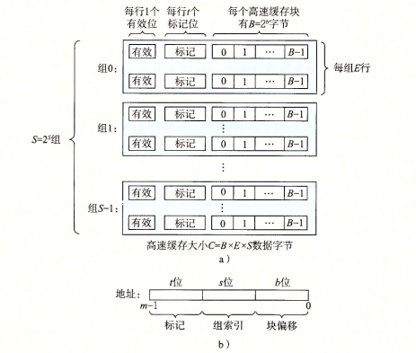
Figure 1: 高速缓存组织形式
- 高速缓存(S,E,B,m)的通用组织:
- 高速缓存是一个高速缓存的数组. 每个组包含一个或多个行, 每个行包含一个有效位, t个标记位, B个字节的数据块;
- 高速缓存的结构将m个地址位划分为 t个标记位, s个索引位, b个块偏移位
高速缓存结构可以用元组(S,E,B,m)来描述. 高速缓存的大小C, 指的是所有块大小的总和. 不包含有效位和标记位, C=SxExB.
- 内存地址位m位, S和B将内存地址分为三个字段:
- s个索引位: 组索引位解释为一个无符号整数, 标识内存应该在哪个组中.
- t个标记位: 标识应当在组中的哪一行.
- b个块偏移: 标识B个字节中的数据块的偏移位置
1.3.2 直接映射高速缓存
高速缓存组中每个组只有一行(E=1)时成为直接映射高速缓存. 结构如下:

Figure 2: 直接映射高速缓存
现在假设由一个系统包含一个CPU,一个寄存器, 一个L1高速缓存,一个内存.cpu读取内存的大致逻辑如下:

高速缓存确定一个请求是否命中, 然后取出被请求的字的过程分为三步: 组选择、行匹配、字抽取。
组选择
高速缓存从w的地址中抽取s个组索引位, 然后解释为对应于组号的无符号整数. 如下图所示.

行匹配
在上一步中, 已经选定了一个组, 接下来确定组中是否有包含w的缓存行. 因为直接映射中, 每个组只有一行, 如果设置了有效位, 且缓存行中的标记位与w地址中的标记位相匹配时, 即缓存命中.

字选择
如果缓存命中, 则w的副本就在缓存行块中的某个位置. 通过w地址中的块偏移找到w副本在缓存行块中的位置.
直接映射高速缓存中不命中时的行替换
缓存不命中时, 需要从存储器层次结构中的下一层取出被请求的块. 用新取出的行替换高速缓存行.
直接映高速缓存中的冲突不命中
高速缓存反复的加载和驱逐相同的高速缓存块的组, 这种现象称为术语 "抖动". 其原因是这些块被映射到的同义个高速缓存组. 这种抖动一般至少会导致速度下降2-3倍.
如果我们意识到此问题, 可以很容易的修复抖动问题. 一个简单方法是可以在数组或者结构的结尾放置B字节的填充.
为何使用地址中间的位作索引
如下图所时, 如果使用高位作索引, 那么一些连续的内存块就会映射到相同的高速缓存块.
如果一个程序有良好的空间局部性, 顺序的扫描一个数组元素, 那么在任意时刻, 高速缓存都只保存着一个块的大小的数组内容, 使用效率降低. 相比较而言, 以中间位作索引, 相邻的块总是映射到不同的高速缓存行.
1.3.3 组相连高速缓存
直接映射高速缓存中冲突不命中的问题源于每个组只有一行这个限制. 组相连高速缓存放松了这个限制, 每个组都保存有超过一个的高速缓存行. 一个 1<E<C/B的高速缓存通常称为E路组相连高速缓存.
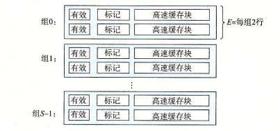
组相连高速缓存中的组选择
与直接映射高速缓存的组选择相同.
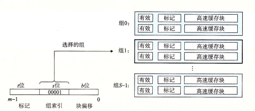
组相连高速缓存中的行匹配和字选择
组相连高速缓存的行匹配需要检查多个行的标记位和有效位, 以确定请求的字是否在缓存行集合中.
组中的任何一行都可以包含任何映射到这个组的内存块, 所以高速缓存必须搜索组中的每一行, 以寻找匹配行. 如果找到则命中, 根据块偏移在缓存行的块中选择一个字.

组相连高速缓存中不命中时的行替换
如果缓存不命中时, 从内存中取出块后应该放入高速缓存组的哪一行呢? 如果有空行, 选择空行, 如果没有空行, 那么选择一个cpu不会很快引用的行来替换.
简单的策略时随机替换,还有一些副在的策略, 最不常使用策略, 最近最少使用策略……
1.3.4 全相连高速缓存
全相连高速缓存是由一个包含所有高速缓存行的组(E=C/B)组成.

全相连高速缓存的组选择
只有一组, 不用选. 地址中没有索引位, 只有标记位和块偏移.

全相连高速缓存的行匹配和字选择
与组相连高速缓存相同.

由于高速缓存电路需要并行的搜索许多相匹配的标记, 构造一个又大又快的相连高速缓存很困难, 而且比较昂贵. 因此, 全相连高速缓存只适合做小的高速缓存, 例如虚拟内存系统中的翻译备用缓冲器(TLB), 用以缓存页表项.
1.3.5 写的问题
如果写一个已经缓存了w的高速缓存. 在高速缓存更新后如何更新低一层的层次结构的副本呢. 最简单的方法就是直写,缺点是每次写都会引起总线流量. 另一种方法是write-back, 尽可能推迟更新, 只有当替换算法要驱逐这个修改过的块时, 才把他写入紧接着的第一层中, 可以显著的减少总线流量, 缺点时增加了复杂性. 高速缓存必须为每个缓存行维护一个额外的修改位, 表明是否被修改.
如何处理写不命中呢. 一种方法是写分配, 加载相应的低一层中的块到高速缓存中, 然后更新高速缓存块. 写分配试图利用写的空间局部性, 缺点是每次不命中都会导致一个块从低一层传送到高速缓存. 另一种方法是非写分配, 避开高速缓存, 直接写入低一层中. 直写通常是非写分配, write-back通常是写分配.
1.4 一个真实的高速缓存层次结构的剖析
以上只介绍了高速缓存只保存数据. 实际上, 高速缓存既保存数据, 也保存指令. 只保存指令的称为i-cache. 只保存程序数据的为d-cache. 既保存指令也保存数据的高速缓存称为统一的高速缓存. 现代处理器包括独立的i-cache和d-cache. 两个独立的高速缓存能够同时读取指令和数据.
下图给出了 Intel Corei7处理器的高速缓存层次结构. 每个cpu有4个核. 每个核有自己私有的L1 i-cache、L1 d-cache和L2统一高速缓存。 所有高速缓存共享L3统一高速缓存。 这个层次结构所有的SRAM高速缓存存储器都在CPU芯片上。

| 高速缓存类型 | 访问时间（周期） | 高速缓存大小（C） | 相连度（E） | 块大小（B） | 组数（S） |
|---|---|---|---|---|---|
| L1 i-cache | 4 | 32KB | 8 | 64B | 64 |
| L1 d-cache | 4 | 32KB | 8 | 64B | 64 |
| L2 统一高速缓存 | 10 | 256KB | 8 | 64B | 512 |
| L3 统一高速缓存 | 40～75 | 8MB | 16 | 64B | 8192 |
1.5 高速缓存参数的性能影响
衡量指标有：
- 不命中率
- 命中率
- 命中时间
- 不命中处罚
- 高速缓存大小的影响 较大的高速缓存可能会提高命中率，但是通常大存储器运行要慢一些，所以会增加命中时间。这就是为什么 L1高速缓存比L2高速缓存小， L2小于L3的原因。
- 块大小的影响 较大的块能利用程序中可能存在的空间局部性， 提高命中率。对于给定的高速缓存大小， 块越大意味着高速缓存行越少。会损害时间局部性比空间局部性更好的程序的命中率。较大的块对不命中处罚也有负面影响， 块越大传送时间越长。
- 相连度的影响 E代表高速缓存组中的缓存行数。较高的相连度会降低高速缓存由于冲突不命中出现抖动的可能性。 但较高的相连度会造成较高的成本。实现较昂贵，且很难使速度变快。每一行需要更多的标记位，LRY状态位和额外的控制逻辑。较高的相连度还会增加命中时间和不命中处罚。
- 写策略的影响 直写高速缓存比较容易实现，而且能使用独立于高速缓存的写缓冲区， 用来更新内存。此外读不命中开销没那么大，因为不会触发内存写。另一方面，写回高速缓存引起的传送比较少，它允许更多的到内存的带宽用于执行DMA的I/O设备。此外，越往层次结构下面走， 传送时间增加，减少传送的数量就变得更加重要。一般而言，高速缓存越往下层，越可能使用写回而不是直写。
1.6 编写高速缓存友好的代码
- 让最常见的情况运行的快。程序通常把大部分时间都花在少量的核心函数上，而这些函数通常把是大部分时间都花在了少量循环上。所以把注意力集中在核心函数里的循环上，而忽略其他部分。
- 尽量减少每个循环内部的缓存不命中数量。在其它条件相同情况下，不命中率较低的循环运行的更快。
int sumvec (int v[N]) { int i, sum = 0; for (i = 0; i < N; i++) sum += v[i]; return sum; }
假设一个高速缓存的块大小位B字节， 那么一个步长位k的引用模式（k以字位单位）平均每次循环迭代会有min(1, (wordsize*k)/B)次缓存不命中。 当k=1时取最小值， 所以v步长为1却是时高速缓存友好的。例如假设v是块对齐的，字位4字节，高速缓存块为4个字，高速缓存初始为空。然后，无论什么杨的高速缓存结构， 对v的引用都会得到下面的命中和不命中模式：
| v[i] | i=0 | i=1 | i=2 | i=3 | i=4 | i=5 | i=6 | i=7 |
|---|---|---|---|---|---|---|---|---|
| 访问顺序，h命中，m不命中 | 1[m] | 2[h] | 3[h] | 4[h] | 5[m] | 6[h] | 7[h] | 8[h] |
这个例子中，对v[0]的引用不命中，然后包含v[0]~v[3]的块被从内存load到高速缓存中。因此接下来三个引用都会命中。加载v[4]时也是如此。
上述示例说明了编写高速缓存友好代码的两个重要问题：
- 对局部变量的反复引用是好的，因为编译器能够将他们缓存在寄存器文件中（时间局部性）。
- 步长为1的引用模式是好的，因为存储器层次结构中所有层次上的缓存都是将数据存储为连续的块（空间局部性）。
在对多为数据进行操作的程序中，空间局部性尤为重要。如下面的例子：
int sumarrayrows (int a[M][N]) { int i, j, sum = 0; for (i = 0; i < M; i++) { for (j = 0; j < N; j++) { sum += a[i][j]; } } return sum; }
由于C语言以行优先顺序存储数组，所以这个行数中的内循环有与上一个例子（sumvec）一样好的步长为1的访问模式。假设我们对这个高速缓存做对sumvec一样的假设。那么对数组a的引用会得到下面的命中和不命中模式：
| a[i][j] | j=0 | j=1 | j=2 | j=3 | j=4 | j=5 | j=6 | j=7 |
|---|---|---|---|---|---|---|---|---|
| i = 0 | 1[m] | 2[h] | 3[h] | 4[h] | 5[m] | 6[h] | 7[h] | 8[h] |
| i = 1 | 9[m] | 10[h] | 11[h] | 12[h] | 13[m] | 14[h] | 15[h] | 16[h] |
| i = 2 | 17[m] | 18[h] | 19[h] | 20[h] | 21[m] | 22[h] | 23[h] | 24[h] |
| i = 3 | 25[m] | 26[h] | 27[h] | 28[h] | 29[m] | 30[h] | 31[h] | 32[h] |
如果我们稍稍修改以下循环的次序：
int sumarraycols (int a[M][N]) { int i, j, sum = 0; for (j = 0; j < M; j++) { for (i = 0; i < N; i++) { sum += a[i][j]; } } return sum; }
这种情况下，我们是一列一列的扫描数组。 如果幸运的话，整个数组都在高速缓存中，那么也会有相同的不命中率（1/4）。不过，如果数组比高速缓存要大， 那么每次对a[j][i]的访问都不会命中！
| a[i][j] | j=0 | j=1 | j=2 | j=3 | j=4 | j=5 | j=6 | j=7 |
|---|---|---|---|---|---|---|---|---|
| i = 0 | 1[m] | 2[m] | 3[m] | 4[m] | 5[m] | 6[m] | 7[m] | 8[m] |
| i = 1 | 9[m] | 10[m] | 11[m] | 12[m] | 13[m] | 14[m] | 15[m] | 16[m] |
| i = 2 | 17[m] | 18[m] | 19[m] | 20[m] | 21[m] | 22[m] | 23[m] | 24[m] |
| i = 3 | 25[m] | 26[m] | 27[m] | 28[m] | 29[m] | 30[m] | 31[m] | 32[m] |
较高的不命中率对运行时间有显著影响。例如在桌面机器上，sumarrayrows运行速度比sumarraycols快25倍。总之，我们应当注意程序中的局部性，试着编写利用局部性的程序。
在程序中利用局部性的技术：
- 将注意力集中在内循环上，大部分计算和内存访问都发生在这里。
- 通过按照数据对象存储在内存中的顺序、以步长为1来读取数据，从而使得程序中的空间局部性最大。
- 一旦从存储器中读入了一个数据对象，就尽可能的多使用它，从而使得程序中的时间局部性最大。
2 虚拟内存
虚拟内存是硬件异常、硬件地址翻译、主存、磁盘文件和内核软件的完美交互， 为每个进程提供了一个大的、一致的且私有的地址空间。
虚拟内存提供了三个重要的能力：
- 将主存看做一个存储在磁盘上的地址空间的高速缓存，在主存中只保留活动区域，并根据需要在磁盘和主存之间来回传送数据，通过这种方式高效的使用主存。
- 为每个进程提供了一致的地址空间，简化了内存管理。
- 保护了每个进程的地址空间不被其他进程破坏。
2.1 物理寻址和虚拟寻址
cpu使用物理地址的方式访问主存的方式称为物理寻址。

Figure 14: 物理寻址
cpu通过生成一个虚拟地址（VA）来访问主存，虚拟地址被送到内存之前先转化成物理地址。虚拟地址转换物理地址的任务称作地址翻译。由CPU芯片中的内存管理单元（MMU）来完成，利用存放在主存中的查询表来动态翻译虚拟地址，表的内容由操作系统管理。
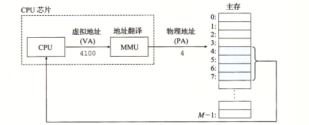
Figure 15: 虚拟寻址
2.2 地址空间
地址空间是一个非负整数地址的有序集合，如果地址空间中的整数是连续的，称之为线性地址空间。一个带有虚拟内存的系统中，cpu从一个 N=2n 个地址空间中生成虚拟地址，这个地址空间称为虚拟地址空间， 其大小由地址的位数（n）决定。现代系统通常支持32位或者64位的虚拟地址空间， 即232或264的地址空间。
地址空间的概念清楚的区分了数据对象（字节）和它们的属性（地址）。 每个数据对象可以由多个独立的地址，每个地址选自不同的地址空间。 这就是虚拟地址空间的基本思想。 主存中的每个字节都有一个选自虚拟地址空间的虚拟地址和选自物理地址空间的物理地址。
2.3 虚拟内存作为缓存的工具
概念上来说，虚拟内存被组织为一个由存放在磁盘上的N个连续的字节大小的单元组成的数组。每个字节都以一个唯一的虚拟地址，作为到数组的索引。磁盘上的内存被缓存在主存中。磁盘上的数据被分割成块（block），作为和主存之间的传输单元。VM系统将虚拟内存分割为固定大小块的虚拟页来与之对应。虚拟页大小P=2p字节，物理内存也被分割为物理页（页帧），页大小也是P字节。 虚拟页的大小一般为4KB～2MB。
任意时刻，虚拟页面的集合都分为三个不相交的子集：
- 未分配：VM系统还没有分配（或创建）的页。不占用磁盘空间。
- 缓存的：当前以缓存在物理内存中的已分配页。
- 未缓存：未缓存在物理内存的已分配页。

Figure 16: VM使用主存作为缓存
2.3.1 DRAM缓存的组织结构
以下使用SRAM标识CPU和主存之间的L1、L2和L3高速缓存， DRAM表示虚拟内存系统的缓存，在主存中缓存虚拟页。
由于DRAM缓存的不命中需要由磁盘来提供服务，开销很大， 所以DRAM缓存设计为全相连的，即任何虚拟页都可以放置在任何的物理页中， 由于大的不命中处罚，在不命中时的替换策略也很重要，其替换策略相比SRAM缓存来说，更加复杂和精密。由于对磁盘的访问时间很长，DRAM使用写回（write-back）而不是直写。
2.3.2 页表
虚拟内存系统需要通过某种方法判定一个虚拟页是否缓存在DRAM中并确定存放在那个物理页中，或者不命中时确定虚拟页所存放的磁盘位置，并从物理内存选择一个物理页来存放虚拟页。 这个功能由软硬将联合提供， 包括操作系统软件、MMU和存放在物理内存的页表，页表将虚拟页映射到物理页。每次地址翻译硬件将虚拟地址转换为物理地址时，都会读取页表。操作系统负责维护页表的内容以及在磁盘和DRAM之间来回传送页。
页表就是一个页表项（page table entry）的数组。虚拟地址空间中的每个页在页表固定偏移量出都有一个PTE。 假设每个PTE由一个有效位和一个n位地址字段组成。如果有效，则地址字段标识DRAM中物理页的起始位置，如果无效，则表示该页位分配或者指向虚拟页在磁盘的起始位置。 下图展示了页表的 基本组织结构 ：
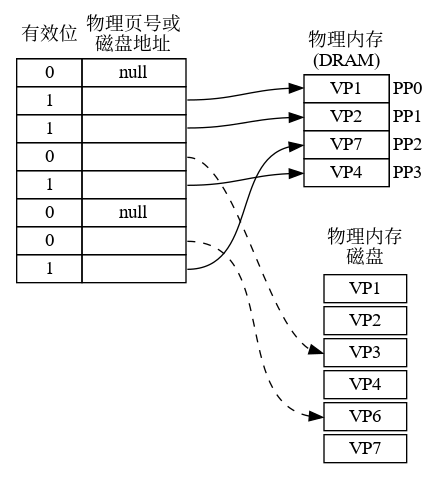
- VP1、VP2、VP4和VP7被缓存在DRAM中。
- VP0、VP5未分配。
- VP3、VP6已分配，未被缓存。
2.3.3 页命中

Figure 18: 页命中
cpu读取VP2中虚拟内存中的一个字时，在页表通过虚拟地址定位到PTE2。由于该页表项有效，说明VP2已经缓存在主存中，通过PTE中的物理内存地址构造出要读取的字的物理地址。
2.3.4 缺页
虚拟内存中，DRAM缓存不命中称为却页（page fault）。

Figure 20: 缺页处理
- cpu引用VP3中的一个字;
- 地址翻译硬件从内存中读取PTE3，由于未被缓存，引发缺页异常;
- 缺页异常调用系统的缺页处理程序，选择一个牺牲页（VP4），如果牺牲页被修改，则写回到磁盘;
- 将磁盘的VP3复制到物理内存的PP3，更新PTE3。
- 缺页处理程序返回后，重新执行导致缺页的指令，该指令将导致缺页的虚拟地址发送到地址翻译硬件。
- 此时页命中，正常处理。
2.3.5 分配页面
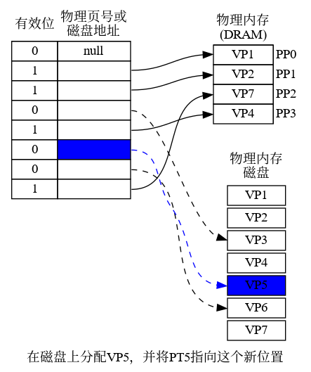
2.3.6 局部性
在程序的整个运行过程中，其引用的页面总数可能超过了物理内存的大小，但由于局部性原则，在任意时刻，程序趋向与在一个较小的页面集合中工作，这个集合叫做工作集或者常驻集合。在开始的时候将工作集页面调度到内存中后，接下来对这个工作集的引用导致页面命中，不会产生额外的磁盘开销。
如果程序有良好的时间局部性，虚拟内存就可以工作的很好。但是如果工作集超过了物理内存大小，就会产生抖动状态，这时页面不断的换入换出。
2.4 虚拟内存作为内存管理的工具
目前为止，都假设有一个单独的页表，将虚拟地址空间映射到物理地址空间。实际上，操作系统为进程提供了独立的页表，即独立的虚拟地址空间。其 基本思想 如下：

Figure 23: 进程独立的进程空间
按需页面调度 和 独立的虚拟地址空间 的结合，对系统中内存的使用和管理造成了深远的影响。 VM简化了链接和加载、代码和数据共享，以及应用程序的内存分配。
- 简化链接
独立的地址空间允许每个进程的内存映像使用相同的基本格式，无需关心代码和数据实际存放到物理内存的什么位置。
例如在linux系统上的每个进程都使用类似的内存格式，对于64位地址空间，代码段总是从虚拟地址0x400000开始。数据段跟在代码段之后，中间有一段符合要求的对齐空白，栈在用户进程地址空间最高的位置，并向下生长。
- 简化加载
- 虚拟内存使得很容易向内存中加载可执行文件和共享对象文件。要把目标文件中的.text和.data段加载到新创建的进程中，linux加载器位代码段和数据段分配虚拟页，并标记位无效（未缓存），将页表项指向目标文件中适当的位置。 加载器不会立即从磁盘向内存复制数据。每个页的初次引用都是由于当cpu读取指令引用，或者一条正在执行的指令引用一个内存而引用的，虚拟内存系统会按照需要自动的调入数据页。
- 简化共享
独立地址空间为操作系统提供了一个管理用户进程和操作系统自身之间共享的相同机制。一般而言，进程都有自己的私有的代码、数据、堆栈等区域，进程之间彼此不共享。这种情况下，系统创建页表，并将相应的虚拟页映射到不连续的物理页面。
进程之间也需要共享某些代码和数据。 例如，每个进程必须调用相同的操作系统内核代码，c程序的标准库。系统通过将不同进程中的时当的虚拟页面映射到相同的物理页面，从而使得进程共享这部分代码的副本，而无需在每个进程中都包含单独的内核和c标准库的副本。
- 简化内存分配
- 虚拟内存为用户进程提供了一个简单的分配额外内存的机制。例如用户进程要分配堆空间（malloc调用），系统分配适合的连续虚拟内存页，并将其映射至任意位置的物理内存页，而无需连续的物理内存页，这要归功于页表的工作方式。
2.5 虚拟内存作为内存保护的工具
操作系统中，不应当允许用户进程修改它的只读代码段，也不允许其读取或者修改任何内核中的代码和数据，也不允许读取或者修改其他进程的私有内存， 而且也不允许修改和其他进程共享的虚拟页，除非所有的共享者都明确允许修改。
独立的地址空间使得区分不同进程的私有内存变得容易。地址翻译机制通过扩展虚拟地址提供了更好的访问控制机制。当CPU生成一个地址时，地址翻译硬件都会读取一个PTE，通过在在PTE中添加额外的许可位来控制对虚拟页的访问。以下展示了 大致逻辑 ：

Figure 25: 利用虚拟内存提供页面的内存保护
这个示例中，每个PTE中添加了三个许可标志位。SUP标识是否只有超级用户可以访问该页。内核中的进程可以访问任何页面，用户进程只能访问SUP为0的页面。 READ和WRITE分别读和写。上图中，如果进程i运行在用户态，对VP0只读，VP1可以读写，VP2不能访问。
如果一条指令违反了许可条件，CPU触发一个一般保护故障，将控制权传递给内核的一场处理程序。linux shell中称为“段错误（segmentation fault）”
2.6 地址翻译
本节讨论地址翻译的基础知识，目的是了解硬件在支持虚拟内存中的角色，其中省略了大量的细节。
以下概括了后续讨论中的所有符号：
| 符号 | 描述 |
|---|---|
| N=2n | 虚拟地址空间中的地址数量 |
| M=2m | 物理地址空间的地址数量 |
| P=2p | 页的大小（字节） |
| 符号 | 描述 |
|---|---|
| VPO | 虚拟页面偏移量（字节） |
| VPN | 虚拟页号 |
| TLBI | TLB索引 |
| TLBT | TLB标记 |
| 符号 | 描述 |
|---|---|
| PPO | 物理页面偏移量（字节） |
| PPN | 物理页号 |
| CO | 缓冲区内的字节偏移量 |
| CI | 高速缓存索引 |
| CT | 高速缓存标记 |
下图展示了MMU如何利用页表实现虚拟地址到物理地址的映射：
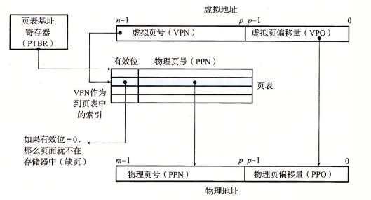
Figure 27: 使用页表进行地址翻译
cpu中的一个控制寄存器，页表基址寄存器（PTBR）指向当前页表。n位的虚拟地址包含两部分：p位的虚拟页面偏移（VPO）和n-p位的虚拟页号（VPN）。MMU利用VPN选择PTE，然后将页表中的物理页号（PPN）和虚拟页面偏移（VPO）组合得到相应的物理地址。
下图分别展示了页面命中和缺页时的步骤：

Figure 28: 页面命中和缺页的操作图（VA：虚拟地址 PA：物理地址 PTEA：页表项地址 PTE：页表项）
页面命中：
- cpu生成虚拟地址，送给MMU。
- MMU生成PTE地址，读取高速缓存/主存。
- 高速缓存/主存向MMU返回PTE。
- MMU构造物理地址并传送给高速缓存/主存。
- 高速缓存/主存返回所请求的数据给CPU。
缺页：
- cpu生成虚拟地址，送给MMU。
- MMU生成PTE地址，读取高速缓存/主存。
- 高速缓存/主存向MMU返回PTE。
- PTE中有效位为0，MMU触发一次异常，并将cpu控制权交给操作系统内核的缺页处理程序。
- 缺页处理程序确定物理内存中的牺牲页，如果牺牲页被修改，则写回到磁盘。
- 缺页处理程序调入新的页面，并更新内存中的PTE。
- 缺页处理程序返回到原先的进程，再次执行导致缺页的指令。cpu重新将缺页的地址发送给MMU。由于此时已经缓存，会继续上述的页面命中的逻辑。
2.6.1 结合高速缓存和虚拟内存
大部分系统的高速缓存采用物理寻址的方式，这样多个进程同时在高速缓存中存放存储块或者共享来自相同虚拟页面的块就变得很容易，并且高速缓存无需处理保护问题，地址翻译过程中会进行权限检查。
以下是物理寻址的高速缓存和虚拟地址结合的场景。地址翻译发生在高速缓存查找之前。 注意：页表项也是可以缓存的。
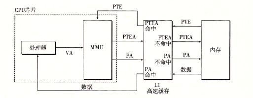
Figure 29: VM和物理寻址的高速缓存结合（VA：虚拟地址 PA：物理地址 PTEA：页表项地址 PTE：页表项）
2.6.2 利用TLB加速地址翻译
每次cpu产生一个虚拟地址，MMU就需要查阅一个PTE，以便将虚拟地址翻译为物理地址，为了消除这个开销，很多系统在其MMU中包含一个存放PTE的缓存，称为 翻译后备缓冲器 (Translation Lookaside Buffer, TLB)。
TLB是一个小的、虚拟寻址的缓存，其每行保存这一个由单个PTE组成的块。 TLB通常由较高的相连度。
如下图所示，用于组选择和行匹配的索引和标记字段是从虚拟地址的虚拟页号（VPN）中提取的， 如果TLB有 T=2t个组，那么TLB索引（TLBI）就是VPN的t个最低位组成，TLB标记位由VPN的剩余位组成。
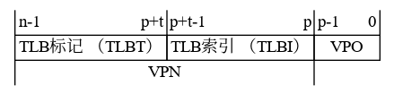
下图展示了TLB命中和不命中的步骤。注意：所有的地址翻译工作都在MMU中进行，速度很快。

Figure 31: TLB命中和不命中的操作图
TLB命中 :
- CPU产生一个虚拟地址。
- MMU从TLB中取出对应的PTE。
- 同上。
- MMU将虚拟地址翻译为物理地址，并发送至高速缓存/主存。
- 高速缓存/主存将所请求的数据返回给CPU。
当TLB不命中时，需要从L1高速缓存中取出相应的PTE，并存储到TLB中。
2.6.3 多级页表
上述讨论都假设系统使用一个单独的页表， 考虑以下32位的地址空间、4KB的页面和4字节的PTE，即使只引用虚拟地址空间的一小部分，也总是需要4MB的页表驻留在内存中，64位地址空间更加复杂。
为解决上述的问题，系统中一般使用多级页表。
假设32位的地址空间被分为4K的页，每个页表项为4字节，还假设此刻虚拟地址空间中，前2K个页面分配给了代码和数据，接下来的6K页面未分配，紧接着的1023个页也未分配，紧接着的1个页面分配给了用户栈。下图展示了这种情况下的结构：

一级页表中的每个PTE负责映射虚拟地址空间中的一个4MB的片（chunk）,这里的每个片都是由1024个连续的页面组成。比如PTE0映射第一片，PTE1映射接下来的一片，32位的地址可以寻址4GB地址空间, 1024个PTE足够覆盖整个空间了. 如果片i中的每个页面都未分配,那么一级页表中的PTEi就为空, 如果片i中至少一个页被分配,那么PTEi就指向一个二级页表的基址。二级页表中的每个PTE都负责映射一个4KB的虚拟内存页。
这种方法从两个方面减少了内存要求：
- 如果一级页表的PTE是空的，那么相应的二级页表就不会存在。
- 只有一级页表需要在主存中，二级页表可以在需要的时候再创建、页面调入和调出，只要常用的二级页表会在主存中。
对于k级页表的地址翻译： 虚拟地址被划分为k个VPN和一个VPO 每个VPN i都对应第i级页表的索引， 1 <= i <= k。 第j级页表的PTE都指向j+1级页表的基址， 1 <= j <= k-1。 第k集页表的每个PTE包含某个物理页面的PPN或者磁盘块的地址。 为了构造物理地址，在确定PPN之前，需要访问k个PTE。
访问k个PTE看上去很昂贵，但是由于TLB缓存了PTE，实际上多级页表不会比单级页表慢很多。
2.6.4 地址翻译的示例
假设：
- 内存按字节寻址
- 内存访问是针对1字节（非4字节）
- 虚拟地址14位长 （n=14）
- 物理地址12位长 （m=12）
- 页面大小64字节 （P=64）
- TLB四路组相连，16个条目
- L1 d-cache物理寻址，直接映射，行大小4字节，共有16个组

如上图所示， 由于页面大小为64=26, 则物理地址和虚拟地址的低六位分别用作PPO和VPO。虚拟地址高8位为VPN，物理地址高6位为PPN。
下图展示了一个小内存系统的快照，TLB、部分页表、L1高速缓存。
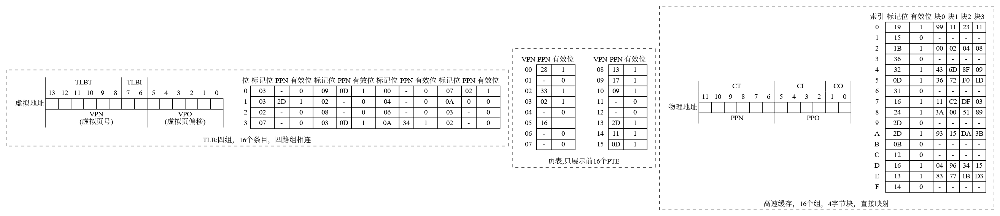
在这种假定情况下，当cpu执行一条读取地址0x03d4处的指令会执行以下过程：
注意：我们假设cpu读取1字节的字，而非4字节。
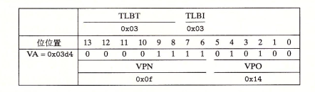
首先MMU从地址中抽取出VPN（0x0f），并检查TLB看是否有PTE 0x0f的副本。 TLB从VPN中分别抽取出TLB索引（0x03）和TLB标记（0x3）， 组3中的第二个条目匹配且有效，所以TLB命中，将缓存的PPN（0x0D）返回给MMU。 如果TLB不命中，则MMU需要从主存中读取PTE。
现在，我们得到了PTE的PPN（0x0D）以及虚拟地址的VPO（0x14），这就组成了物理地址0x354。
接着MMU将物理地址发送给高速缓存， 高速缓存从地址中抽取出缓存偏移CO（0x0）和缓存索引CI（0x5）以及缓存标记CT（0x0D）。
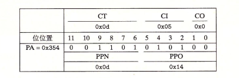
因为组0x5中的标记和CT（0x0D）相匹配，缓存命中，从偏移量CO（0x0 即块0）处读取数据字节（0x36），并将其返回给MMU，MMU在将其返回给CPU。
翻译过程中也可能是其他情况，例如TLB不命中，MMU从页表的PTE中读取PPN，如果PTE无效，将产生缺页，内核需要调入页面，而后重新执行该指令。另一种情况是PTE是有效的，但是高速缓存不命中。
2.7 Intel Core i7/Linux 内存系统

上图是Core i7内存系统的重要部分。处理器封装包括四个核、一个大的被所有核共享的L3高速缓存，以及一个DDR3内存控制器。每个核包含各异层次结构的TLB、一个层次结构的数据和指令高速缓存，以及彝族快速的点到点链路，这种链路基于QuickPath技术，是为了让一个核与其他核和外部I/O桥直接通信。TLB是虚拟寻址的，四路组相连。L1、L2和L3高速缓存是物理寻址的，块大小为64字节。L1和L2是8路组相连，L3是16路组相连。页大小可以在启动时被配置为4KB或4Mb。Linux使用4KB的页。
2.7.1 Core i7地址翻译
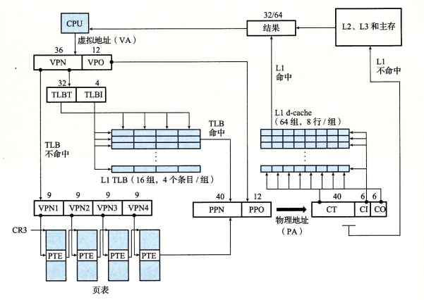
上图总结了完整的Core i7地址翻译过程（从CPU产生虚拟地址开始一直到来自内存的数据字到达CPU）。Core i7采用四级页表层次结构。每个进程有自己私有的页表层次结构。当Linux进程在运行时，虽然Core i7体系结构允许页表换入换出，但是已分配页相关联的页表都是驻留在内存中的。CR3控制寄存器指向第一级页表的起始位置。CR3的值是每个进程上下文的一部分，每次上下文切换时，CR3的值都会被恢复。

上图给出了第一级、第二级和第三级页表条目的格式。当P=1时（linux中总是如此），地址字段包含一个40位物理页号（PPN），它指向适当的页表起始处。注意，这要求物理页表4KB对齐。

上图给出了第四级页表条目的格式。当P=1时，地址字段包括了一个40位的物理页号（PPN），它指向物理内存中的某一页的基地址。这要求物理页4KB对齐。
PTE有三个权限位，控制对页的访问。R/W位确定页的读写权限。U/S位确定是否能在用户模式中访问该页，从而保护操作系统内核中的代码和数据不被用户程序访问。XD（禁止执行）位是在64位系统中引入，可以用来禁止从某些内存页读取指令，通过限制只能执行只读代码段，使得操作系统内核降低缓冲区溢出攻击的风险。
当MMU对虚拟地址翻译时，还会更新两个内核缺页处理程序会使用的位，每次访问一个页时，MMU会设置A位（引用位），内核使用这个位实现页面置换算法。每次对一个页写后，MMU会设置D位，称为修改位或者脏位， 这个位高速内核在复制替换页之前是否必须写回牺牲页。内核可以通过调用特殊指令来清除引用位和修改位。

上图给出了Core i7的MMU使用四级页表将虚拟地址翻译为物理地址的过程，36位的VPN被划分为4个9位的片，每个片被用作到一个页表的偏移量。CR3保存了一级页表的物理地址，VPN1提供了一级页表中的PTE的偏移量，这个PTE包含了二级页表的基地址。VPN2提供了二级页表中的PTE的偏移量，以此类推。
2.7.2 linux虚拟内存系统
linux为每个进程维护了一个单独的虚拟地址空间，如下图所示

内核虚拟内存包含内核中的代码和数据结构。内核虚拟内存的某些内存区域映射到所有进程共享的物理页面。例如，每个进程共享内核的代码和全局数据结构。Linux也将一组连续的虚拟页面（大小等于系统中的DRAM的总量）映射到相应的一组连续的物理页面。这为内核提供了一种便利的方法来访问物理内存中任何特定的位置，例如当内核需要访问页表或在某些设备上执行内存映射的I/O操作，而这些设备被映射到特定的物理内存位置。
2.7.2.1 Linux 虚拟内存区域
Linux将虚拟内存组织为一些区域（段）的集合。一个区域就是已经存在的（被分配的）虚拟内存的连续片，这些页以某种方式相关联。 例如，代码段、数据段、堆、共享库段以及用户栈都是不同的区域。每个存在的虚拟页面都必定保存在某个区域中，不属于区域内部的虚拟页不存在，且不能被进程引用。 区域的概念允许虚拟地址空间有间隙。内核无需记录不存在的虚拟页。
以下是一个进程中虚拟内存区域的内核数据结构。内核为系统中的每个进程维护了一个单独的任务结构。任务结构中的一个条目指向mm_struct，他描述了虚拟内存的当前状态。其中pgd指向一级页表（页全局目录）的基址，而mmap指向一个vm_area_structs结构的链表，其中每个vm_area_structs都描述了当前虚拟地址空间的一个区域。内核切换到该进程时就将pgd存放在CR3控制寄存器中。
vm_area_struct 成员描述：
- vm_start: 区域的起始位置
- vm_end: 区域的结束位置
- vm_prot: 区域内的页的读写权限
- vm_flags: 区域内页面的属性（共享，私有…）
- vm_next: 链表中的下一个区域结构

2.7.2.2 Linux缺页异常处理程序
假设当MMU翻译某个虚拟地址A时，触发缺页，导致控制权转移到内核的缺页处理程序，然后执行以下步骤：
- 虚拟地址A是否合法？也就是说A是否属于某个区域结构（vm_area_struct）定义的区域内？ 首先程序搜索区域结构的链表，将A和区域结构的vm_start和vm_end作比较（实际上内核通过在链表中构建树，在树中搜索）。如果没找到，则触发段错误，终止进程。
- 进程是否有读、写或者执行这个区域页面的权限。
- 如果是合法地址，则选择一个牺牲页，如果这个牺牲页被修改过，则将此页面交换出去，换入新的页面，并更新页表，当缺页程序返回时，CPU重新启动引起缺页的指令。

2.8 内存映射
2.9 动态内存分配
2.10 C程序中常见内存错误
3 Linux内存代码学习
内存划分为节点, 表示为数据结构 pg_data_t, 各个节点保存在一个单链表中, 供内核遍历. 节点划分为不同的内存域:
- ZONE_DMA 标记适合DMA的内存域
- ZONE_DMA32 标记了使用32为地址寻址、适合DMA的内存域(32位计算机为空)
- ZONE_NORMAL 可以直接映射内核段的普通内存域
- ZONE_HIGHMEM 超出内核段的物理内存
- ZONE_MOVABLE 在防止无力内存碎片时使用
冷热页 struct zone 的 pageset成员用于实现冷热页分配器. 热页代表页在高速缓存中, 冷页不在高速缓存中.
页帧
3.1 页表
linux上使用四级页表 虚拟内存地址划分为5个部分, 四个表项用于选择页, 一个索引表示页内偏移.
| <------------- BITS_PER_LONG ------------> | | PGD | PUD | PMD | PTE | Offset | | PAGE_SHIFT | | <---PMD_SHIFT ---> | | <------- PUD_SHIFT ------> | | <--------- PGDIR_SHIFT ----------> |
- PTRS_PER_PGD 全局页目录中的项数
- PTRS_PER_PUD 上层页目录中的项数
- PTRS_PER_PMD 中间页目录中的项数
- PTRS_PER_PTE 页表中的项数
两级页表的体系结构会将 PERS_PER_PMD 和 PTRS_PER_PUD 定义为1.
- pgd_t 全局页目录项
- pud_t 上层页目录项
- pmd_t 中间页目录项
- pte_t 页表项
特定与PTE的信息 页表项包含了指向页内存位置的指针, 在其多余的比特位上包含了与页有关的附加信息.
- _PAGE_PRESENT 指定虚拟内存页是否在内存中(可能被换出到交换区…)
- _PAGE_ACCESSED cpu访问页或读写页时自动设置(标识页的活跃程度, 用于换出页)
- _PAGE_DIRTY 脏页,需要回写
- _PAGE_USER 允许用户空间访问该页,否则只有内核可以访问
- _PAGE_READ、_PAGE_WRITE、_PAGE_EXECUTE 指定普通用户进程读、写、执行页中内容
- _PAGE_BIT_NX(IA-32和AMD64) 将页标记为不可执行(可用于防止执行栈页上的代码)
3.2 内存初始化
start_kernel 1. setup_arch 2. setup_per_cpu_areas 3. build_all_aonelists 4. mem_init 5. kmem_cache_init 6. setup_per_cpu_pageset 1. 特定于体系结构的设置函数, 其中有一项负责初始化自举分配器 2. 为系统中的各个cpu创建每cpu变量的副本 3. 建立节点和内存域的数据结构 4. 停用bootmem分配器并迁移到实际的内存管理函数(特定体系结构的函数) 5. 初始化内核内部用于小块内存区的分配器 6. 为 zone 结构中的pageset数组的第一个数组元素分配内存(为系统第一个处理器分配内存)
3.2.1 节点和内存域初始化
build_all_zonelists建立管理节点及其内存域所需的数据结构.
build_all_zonelists
__build_all_zonelists {
int nid;
for_each_online_node(nid) {
pg_data_t *pgdat = NODE_DATA(nid);
build_zonelists(pgdat);
}
}
for_each_online_node 遍历系统中所有活动节点. build_zonelists 需要一个指向 pgdata_t 实例的指针作为参数, 此函数在当前处理节点和系统中其他节点的内存域之间建立一种等级次序(内存域的次序和节点之间的次序), 用于内存分配次序.
3.2.2 内核在内存中的布局
|(0x0) <--4KB--> |(0x1000) <--640KB--> |(0x9e800) <--ROM--> |(0x100000) <--text--> | <--data--> |
以一个页帧保留, 接下来有640KB的区域, 之后紧邻的区域由系统保留, 用于映射各种ROM(通常是系统BIOS和显卡ROM), 不可能向映射ROM的区域写入数据. 由于内核总是会装载到一段连续的区域中, 如果要装载到之前的640KB区域中, 则要求内核必须小于640KB.
IA-32内核使用0x100000作为起始地址, 对应于内存的第2MB开始处.
AMD64系统上, 内核从内存的第3MB的起始处开始.
编译内核之后, 会生成 System.map 文件, 包含内核全局变量 内核定义的函数和例程的地址, 内核代码段 数据段 初始化数据段的地址信息.
也可以通过一下命令查看物理内存划分出的各个段的信息:
cat /proc/iomem
3.2.3 初始化步骤
IA-32 setup_arch 1. machine_specific_memory_setup 2. parse_early_param 3. setup_memory 4. paging_init pagetable_init 5. zone_sizes_init add_active_range free_area_init_nodes 1. 创建一个列表, 包含系统占据的内存去和空闲内存区. (BIOS-provided physical RAM map:) 2. 解析命令行(mem=XXX, highmem=XXX, memmap=XXX ......) 3. 确定节点可用的物理内存页的数目 初始化bootmem分配器 分配各种内存区(例如, 运行第一个用户空间过程所需的最初的RAM磁盘 4. 初始化内核页表,并启用内存分页 通过调用pagetable_init, 确保了直接映射到内核地址空间的物理内存被初始化. 5. 初始化系统中所有节点的pgdat_t实例 调用add_active_range对可用的物理内存建立一个列表; free_area_init_nodes使用上述信息建立完备的内核数据结构。
AMD64 setup_arch 1. setup_memory_region 2. parse_early_param 3. e820_register_active_region add_active_range 4. init_memory_mapping 5. config_initmem_init 6. paging_init free_area_init_nodes 1. 完成基本的内存设置, 可用的内存信息由BIOS提供的E820映射给出. 2. 解析命令行. 3. e820_register_active_region通过分析上述的E820映射得到相关信息后, 调用add_active创建可用内存的一个简单列表. 4. 将可用的物理内存直接映射到虚拟地址空间中从PAGE_OFFSET开始的内核地址空间. 5. 激活bootmen分配器. 6. 处理一些稀疏内存系统的设置例程,
3.2.4 分页机制的初始化
paging_init负责建立只能用于内核的页表, 用户空间无法访问.
IA-32系统上内核通常将4GB可用的虚拟地址空间按3:1的比例划分. 低端3GB用于用户状态的应用程序, 高端1GB用于内核空间.
如此划分地址空间的动机如下:
- 在用户应用程序从用户态切换到核心态时, 内核必须装载在一个可靠的环境中, 因此有必要将地址空间的一部分分配给内核专用.
- 物理内存页映射到内核地址空间的起始处, 以便内核直接访问, 而无需复杂的页表操作.
3.2.4.1 内核地址空间的划分
用来管理虚拟地址空间的第4GB页表的结构, 标明了地址空间的各个区域的用途, 与物理内存的分配无关 1 2 3 4 5 6 7 |_________________________|______|__________|___|________|________| 直接映射的所有物理页帧 8MB VMALLOC 持久映射 固定映射 1: PAGE_OFFSET(0xC0000000) 2: high_memory 3: VMALLOC_START 4: VMALLOC_END 5: PKMAP_BASE 6: FIXADDR_START 7: 4GB
- 第一段将系统的所有物理内存页映射到内核的虚拟地址空间中. 内核地址空间从偏移量0xC0000000(3GB)开始, 即每个虚拟地址x对应于物理地址(x-0xC0000000).
- 直接映射区域从0xC0000000到和high_memory地址, 如果物理内存超过896MB, 无法直接映射全部的物理内存. 此值小于1GB是由于内核要保留128MB的地址空间用于其他目的.
内核中经常使用缩写normal和highmem来区分是否可以直接映射的页帧
内核移植的每个体系结构都必须提供两个宏, 用于一致映射的内核虚拟内存部分, 进行无力和虚拟地址之间的转换.
- __pa(vaddr) 返回与虚拟地址vaddr相关的物理地址
- __va(paddr) 计算出对应于物理地址paddr的虚拟地址
这些函数不使用与处理虚拟地址空间中的任意地址, 只能用于其中的一致映射部分.
内核地址空间的最后128MB的用途:
- 虚拟内存中连续, 但物理内存不连续的内存区, 可以在vmalloc区域中分配.
- 持久映射用于将高端内存域中的非持久页映射到内核中.
- 固定映射是与物理地址空间中的固定页关联的虚拟地址空间项, 但具体关联的页帧可以自由选择. 与直接映射页相反, 虚拟固定映射地址与物理内存位置之间的关联可以自行定义, 关联建立后内核总是会注意到.
VMALLOC_OFFSET使得在直接映射的所有内存页和用于非连续分配的区域之间保留"空洞", 可以用作访问越界地址异常. 同理VMALLOC_START 至 VMALLOC_END区域中的vmalloc区域之间也会保留4KB的"空洞".
固定映射区域可以指向物理内存的随机位置, 该映射内部的虚拟地址和物理地址之间的关联不需要预设, 可以自由定义, 定义之后不可改变, 固定映射区域会一直延伸到虚拟地址空间的顶端.
3.2.4.2 划分虚拟地址空间
3.2.5 注册活动内存区
活动内存区就是不包含空洞的内存区. 必须使用add_active_range在全局变量early_node_map中注册内存区.
当前注册的内存区数目记载在 nr_nodemap_entries中.
struct node_active_region { /* 此内存区中的第一个页帧 */ unsigned long start_pfn; /* 此内存区中的最后一个页帧 */ unsigned long end_pfn; /* 内存区所属节点的NUMA ID */ int nid; };
活动内存区使用 add_active_range 注册.
3.2.6 AMD64地址空间的设置
由于64位地址空间跨度太大, 当前只使用了48位的地址空间, 48位宽的地址字可以寻址256TB的地址空间. 尽管物理地址字位宽被限制在48位, 但在寻址虚拟地址空间是仍然使用了64位指针, 因而虚拟地址空间形式上仍然会跨越264字节.
AMD64计算机上虚拟地址到物理地址空间映射方式: 虚拟地址的第47位([0,46])可以任意设置,而比特位[47,63]的之总是相同的: 或者全0, 或者全1. 因此整个地址空间划分位3部分: 下半部、上半部、中间禁用的区域. 上下两部分共同构成跨越248字节的地址空间.
下半部地址空间: 0x0, 0x0000 7FFF FFFF FFFF 上半部地址空间: 0xFFFF 8000 0000 0000, 0xFFFF FFFF FFFF FFFF
可访问的地址空间的整个下半部作为用户空间, 上半部专用于内核.
3.2.7 end
3.3 启动过程中的内存管理
bootmem分配器用于在启动阶段早期分配内存.该分配器用一个位图来管理页, 位图比特位数目与系统中的物理内存页的数目相同.需要内存时逐个扫描位图, 直至找到一个能够提供连续内存的位置.
3.3.1 数据结构
typedef struct bootmem_data { /* 保存系统中第一个页的编号 */ unsigned long node_boot_start; /* 可以直接管理的物理地址空间的最后一页的编号 */ unsigned long node_low_pfn; /* 指向存储分配位图的指针 */ void *node_bootmem_map; /* 上次分配的页内偏移 */ unsigned long last_offset; /* 上一次分配页的编号 */ unsigned long last_pos; /* 上一次成功分配内存的位置 */ unsigned long last_success; /* Previous allocation point. To speed * up searching */ /* * 内存不连续的系统需要多个bootmem分配器 * 链表头是全局变量 bdata_list */ struct list_head list; } bootmem_data_t;
3.3.2 初始化
- IA-32
setup_memory
确定可用的低端内存页帧
setup_bootmem_allocator
inti_bootmem
register_bootmen_low_pages
reserve_bootmen(bootmap, bootmap_size)
调用reserve_bootmem分配特定的内存区
- AMD64
contig_initmem
bootmem_bootmap_pages
找到适当的内存区
init_bootmem
register_bootmem_with_active_regions
reserve_bootmem(bootmap, bootmap_size)
3.3.3 提供的内核接口
3.3.3.1 分配内存
- 从ZONE_NORMAL区域分配
alloc_bootmem alloc_bootmem_pages
- 从ZONE_DMA区域分配
alloc_bootmem_low alloc_bootmem_low_pages
上述函数都是 __alloc_bootmem的前端, 实际工作委托给 __alloc_bootmem_nopanic. 此函数遍历bootmem分配器, 直至成功为止.
__alloc_bootmem_nopanic 遍历调用 __alloc_bootmem_core 在bootmem分配器上进行分配. __alloc_bootmem_core函数执行的操作如下:
- 从goal开始, 扫描位图, 查找满足分配请求的空闲内存区.
- 如果目标页紧接着上一次分配的页, 检查last_offset 判断所需的内存是否能在上一页分配.
- 新分配的页位图置位, 更新last_pos last_offset成员
3.3.3.2 释放内存
free_bootmem函数用来释放内存 __free_bootmem_core 用来释放整页.
3.3.4 停用bootmem分配器
free_all_bootmem 扫描bootmem分配器的页位图, 释放未使用的页. 最终会调用__free_page. 使得这些页并入伙伴系统的数据结构.扫描完成后,释放其占用的内存空间.
3.3.5 释放初始化数据
许多内核代码块和数据表只在系统初始化阶段需要, 在结构建立之后,这些例程就不再需要了.(例如: 链接到内核的驱动程序,驱动程序用于检测其设备的硬件数据库等)
内核提供两个属性 __init 和 __initcall, 用于标记初始化函数和数据. 这些必须至于函数或数据声明之前. __init 和 __init_initcall 借助特殊的GNU C编译器语句来实现.
#define __init __attribute__ ((__section__ (".init.text"))) __cold #define __initdata __attribute__ ((__section__ (".init.data"))) #define __exitdata __attribute__ ((__section__(".exit.data"))) #define __exit_call __attribute_used__ __attribute__ ((__section__ (".exitcall.exit")))
通过 attribute 关键字使用 section 属性通知编译器将随后的数据分别写入二进制文件的 .init.text和 .init.data段.
readelf工具可以用来查看elf文件的各个段
readelf --sections vmlinux
内核定义了两个变量, __init_begin 和 __init_end. free_initmem利用此变量来释放用于初始化的内存.
3.4 物理内存的管理
3.4.1 伙伴系统结构
struct zone { ... /* 不同长度的空闲区域 */ /* 1 2 4 8 ...... */ struct free_area free_area[MAX_ORDER]; ... }; struct free_area { struct list_head free_list[MIGRATE_TYPES]; /* 指定当前内存区中空闲页块的数目 */ unsigned long nr_free; };
3.4.2 避免碎片
现代cpu都提供了使用巨型页的可能性, 比普通页大得多. 使用大页时, 地址转换后备缓冲器只需处理较少的项, 降低TLB缓存失效的可能性.
3.4.2.1 依据可移动性组织页
已分配页可以划分为3种类型:
- 不可移动页: 在内存中有固定位置, 不能移动到其他地方. 核心内核分配的大多数内存属于该类别.
- 可回收页: 不能直接移动, 可以删除,其内容可以从某些源重新生成.例如映射自文件的数据属于该类别.
- 可移动页: 可以随意移动. 用户空间应用程序的页属于该类别.
内核定义页的迁移类型:
#define PAGE_ALLOC_COSTLY_ORDER 3 #define MIGRATE_UNMOVABLE 0 #define MIGRATE_RECLAIMABLE 1 #define MIGRATE_MOVABLE 2 #define MIGRATE_RESERVE 3 #define MIGRATE_ISOLATE 4 /* can't allocate from here */ #define MIGRATE_TYPES 5
当内核无法满足针对某一给定迁移类型的内存分配请求时, 内核提供了备用列表, 规定了接下来使用哪种迁移类型的页:
/* * This array describes the order lists are fallen back to when * the free lists for the desirable migrate type are depleted */ static int fallbacks[MIGRATE_TYPES][MIGRATE_TYPES-1] = { [MIGRATE_UNMOVABLE] = { MIGRATE_RECLAIMABLE, MIGRATE_MOVABLE, MIGRATE_RESERVE }, [MIGRATE_RECLAIMABLE] = { MIGRATE_UNMOVABLE, MIGRATE_MOVABLE, MIGRATE_RESERVE }, [MIGRATE_MOVABLE] = { MIGRATE_RECLAIMABLE, MIGRATE_UNMOVABLE, MIGRATE_RESERVE }, [MIGRATE_RESERVE] = { MIGRATE_RESERVE, MIGRATE_RESERVE, MIGRATE_RESERVE }, /* Never used */ };
3.4.2.2 初始化内存域和节点数据结构
体系结构代码在启动时需要建立一下信息:
- 系统中各个内存域的页帧边界, 保存在max_zone_pfn数组
- 各节点页帧的分配情况, 保存在全局变量early_node_map中.
free_area_init_nodes 确定内存域边界 free_area_init_node calculate_node_totalpages alloc_node_mem_map free_area_init_core check_for_reqular_memory
3.4.2.3 分配器API
GFP(Get Free Page)
内存分配掩码:
- __GFP_DMA
- __GFP_HIGHMEM
- __GFP_DMA32
- __GFP_MOVABLE 不表示物理内存域, 通知内核应该在特殊的虚拟内存域ZONE_MOVABLE进行分配
static inline enum zone_type gfp_zone(gfp_t flags) { int base = 0; /* 如果配置了 __GFP_THISNODE, 则只能从本NUMA节点分配 */ #ifdef CONFIG_NUMA if (flags & __GFP_THISNODE) base = MAX_NR_ZONES; #endif #ifdef CONFIG_ZONE_DMA if (flags & __GFP_DMA) return base + ZONE_DMA; #endif #ifdef CONFIG_ZONE_DMA32 if (flags & __GFP_DMA32) return base + ZONE_DMA32; #endif if ((flags & (__GFP_HIGHMEM | __GFP_MOVABLE)) == (__GFP_HIGHMEM | __GFP_MOVABLE)) return base + ZONE_MOVABLE; #ifdef CONFIG_HIGHMEM if (flags & __GFP_HIGHMEM) return base + ZONE_HIGHMEM; #endif return base + ZONE_NORMAL; }
#define __GFP_WAIT ((__force gfp_t)0x10u) /* Can wait and reschedule? */ #define __GFP_HIGH ((__force gfp_t)0x20u) /* Should access emergency pools? */ #define __GFP_IO ((__force gfp_t)0x40u) /* Can start physical IO? */ #define __GFP_FS ((__force gfp_t)0x80u) /* Can call down to low-level FS? */ #define __GFP_COLD ((__force gfp_t)0x100u) /* Cache-cold page required */ #define __GFP_NOWARN ((__force gfp_t)0x200u) /* Suppress page allocation failure warning */ #define __GFP_REPEAT ((__force gfp_t)0x400u) /* Retry the allocation. Might fail */ #define __GFP_NOFAIL ((__force gfp_t)0x800u) /* Retry for ever. Cannot fail */ #define __GFP_NORETRY ((__force gfp_t)0x1000u)/* Do not retry. Might fail */ #define __GFP_COMP ((__force gfp_t)0x4000u)/* Add compound page metadata */ #define __GFP_ZERO ((__force gfp_t)0x8000u)/* Return zeroed page on success */ #define __GFP_NOMEMALLOC ((__force gfp_t)0x10000u) /* Don't use emergency reserves */ #define __GFP_HARDWALL ((__force gfp_t)0x20000u) /* Enforce hardwall cpuset memory allocs */ #define __GFP_THISNODE ((__force gfp_t)0x40000u)/* No fallback, no policies */ #define __GFP_RECLAIMABLE ((__force gfp_t)0x80000u) /* Page is reclaimable */ #define __GFP_MOVABLE ((__force gfp_t)0x100000u) /* Page is movable */
- __GFP_WAIT 表示分配内存的请求可以中断
- __GFP_HIGH 表示内核急切的需要内存, 在分配内存失败可能给内核带来严重后果是, 使用此标志
- __GFP_IO 在查找空闲内存期间内核可以进行I/O操作
- __GFP_FS 允许内核执行VFS操作, 在与VFS层有联系的内核子系统中必须禁用, 因为这可能引起循环递归调用
- __GFP_COLD 分配不需要在CPU高速缓存中的'冷'页时使用
- __GFP_NOWARN 分配失败时 禁止内核故障警告
- __GFP_REPEAT 分配失败 自动重试有限的次数
- __GFP_NOFALL 分配失败 一直重试
- __GFP_ZERO 分配成功时, 将页填充为0
- __GFP_HARDWALL 限制当前进程只能在允许运行的各个cpu关联的节点上分配内存(NUMA系统才有意义)
- __GFP_THISNODE 分配失败时 不允许从其他备用节点分配
- __GFP_RECLAIMABLE和__GFP_MOVABLE 页迁移机制使用的标志, 分别将分配的内存标记为可回收的或可移动的